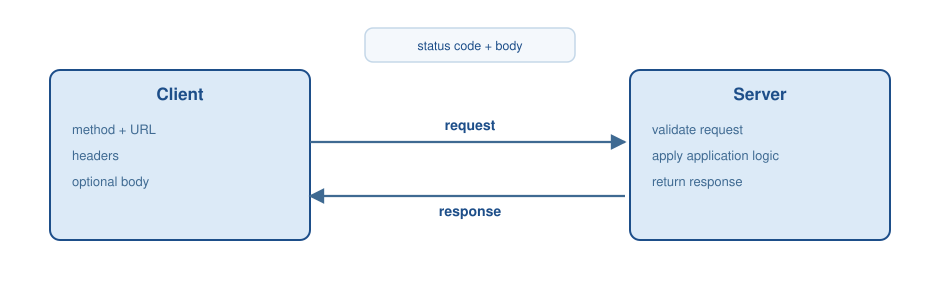

help(abs)
dir(str)Appendix B — Python and API basics
This appendix is a reference, not a full Python course. Its goal is narrow: enough Python to read, run, and adapt the code listings in this book, and enough about web APIs and JSON to follow the tool-calling, retrieval, and orchestration examples that depend on them. Coverage is deliberately shaped by what the book’s own code actually uses, rather than by a generic language tour — constructs that never appear in a listing (e.g., operator overloading, metaclasses) are left out, while constructs that recur throughout (type hints, dictionaries that mirror JSON, decorators, try/except) get dedicated treatment. For installing Python and the packages used in this book, see Appendix A.
B.1 Python as an interpreted language
Python is commonly described as an interpreted language. In practice, a typical implementation (CPython) compiles source code into bytecode, which is then executed by a virtual machine. The operational consequence is that programs can be run interactively, executed incrementally, and developed with short edit-run cycles — the same code cell can be re-run after a small edit without a separate build step.
Compiled language toolchains translate source code into machine code before execution. This separation frequently enables stronger ahead-of-time optimization and reduces runtime overhead, but it also changes the development workflow: compilation becomes a distinct build step, and interactive execution requires additional infrastructure.
B.2 Working environments
Python programs are commonly written and executed in an integrated development environment (IDE), or in notebook systems that combine code and narrative text — the format used throughout this book.
Jupyter Notebook environments are frequently used for exploratory work, reproducible analyses, and documentation that interleaves prose with executable code. Notebook execution is stateful: cells can be executed out of order, which makes it necessary to manage dependencies between cells explicitly when producing reproducible results. Every executable listing in this book is a notebook cell in exactly this sense: later cells assume that earlier cells in the same chapter have already run.
For projects that involve multiple files and larger codebases, an IDE often provides stronger navigation, refactoring support, and debugging capabilities. A practical workflow uses notebooks for experimentation and moves stable components into modules that can be imported in both notebooks and scripts.
B.3 Language fundamentals
Python is case-sensitive, uses indentation to structure blocks, and is dynamically typed. Dynamic typing means that the type of a variable is associated with the runtime value rather than with an explicit declaration.
Indentation is part of the syntax and replaces block delimiters such as braces. A consistent indentation style is required, since inconsistent indentation can cause syntax errors and subtle behavioral changes.
B.3.1 Getting help interactively
The built-in functions help() and dir() provide documentation and introspection information in interactive sessions.
B.3.2 Variables and basic data types
Variables bind names to objects. Assignments introduce or update a binding, and the runtime determines the type from the assigned value.
x = 10
x = "Hello"Basic data types include integers, floating-point numbers, Booleans, strings, and the special value None. None is Python’s explicit absence-of-a-value marker and appears constantly in this book’s code wherever a field is optional — a tool argument that was not supplied, a cache lookup that missed, a step that produced no result.
x = 3
pi = 3.14
flag = True
text = "Python"
missing = None
type(x), type(text), type(missing)Identity testing with is is distinct from equality testing. Identity checks whether two references point to the same object; is None is the idiomatic way to test for absence, preferred over == None. Type checks are usually expressed with isinstance.
x = 3.14
isinstance(x, float)B.3.3 Type hints
Type hints annotate variables, function parameters, and return values with the type they are expected to hold. The interpreter does not enforce them at runtime; they exist for readers, editors, and separate static-analysis tools. This book’s function signatures use them throughout, because a hinted signature documents a tool’s or a function’s contract without requiring a separate specification.
def add(x: int, y: int) -> int:
return x + yContainer types are parameterized with the type of their elements or entries: list[str] is a list of strings, dict[str, float] maps strings to floats. Optional[str] (or, equivalently, str | None) marks a value that may be absent.
from typing import Optional
def lookup_price(item: str, catalog: dict[str, float]) -> Optional[float]:
return catalog.get(item)B.3.4 Strings and formatting
Strings are sequences of Unicode characters. Indexing and slicing operations produce substrings without modifying the original value.
name = "Alice"
name[0]
name[1:4]An f-string (formatted string literal) embeds expressions inside string templates. This is the dominant way this book constructs prompts and formats output, since it keeps the template and the interpolated values in one readable line.
name = "Alice"
age = 30
msg = f"Name: {name}, age: {age}"
msgprice = 19.99
qty = 3
total = price * qty
f"Total: {total:.2f}"A handful of string methods account for most of the text handling in this book’s code: .split() breaks a string into a list on whitespace or a given separator, .join() is the reverse, concatenating a list of strings with a separator between them, .strip() removes leading and trailing whitespace, .lower() normalizes case for comparison, and .startswith() tests a prefix.
line = " §4.2 Refunds are issued within 5 business days "
line.strip().lower().startswith("§4.2")parts = "policy,refund,shipping".split(",")
", ".join(parts)
CautionExercise: strings
Create sentence = "I am learning Python". Compute its length, extract the substring "Python" via slicing, and replace "Python" with "APIs".
B.3.5 Collections and indexing
Python provides several built-in collection types. Lists are ordered and mutable, tuples are ordered and immutable, dictionaries map keys to values, and sets represent unordered collections of unique elements. Dictionaries are the most important of these for this book: a Python dictionary and a JSON object have the same shape, and tool arguments, API payloads, and configuration are all passed around as dictionaries.
values = [10, 20, 30, 40]
pair = (10, 20)
record = {"name": "Alice", "age": 30}
unique = {1, 2, 3}
values[0], pair[1], record["name"]The dictionary method .get(key, default) looks up a key without raising an exception when it is missing, which is safer than [key] for data whose shape is not fully guaranteed — a common situation when the dictionary came from a retrieved document or an API response.
record.get("email", "not provided")Sets do not support positional indexing. Membership tests express the most common access pattern.
10 in {10, 20, 30}
CautionExercise: list indexing
Create a list that contains all even numbers from 2 to 20 and print the seventh element.
B.3.6 Unpacking with * and **
The ** operator spreads a dictionary’s entries as keyword arguments at a function call. This single idiom is how every tool-calling example in this book turns a parsed JSON object into an ordinary function call: an LLM’s tool call arrives as a JSON string, json.loads turns it into a dictionary, and ** turns that dictionary into the keyword arguments the underlying Python function expects.
def add_numbers(x, y):
return x + y
args = {"x": 13, "y": 29}
add_numbers(**args) # identical to add_numbers(x=13, y=29)The single * operator does the same for a list or tuple, spreading its elements as positional arguments. Both operators also work in the other direction, inside a function definition: *args collects any extra positional arguments into a tuple, and **kwargs collects any extra keyword arguments into a dictionary. This is what lets a decorator’s wrapper function, shown below, accept and forward arguments for a function it has never seen.
def describe(*args, **kwargs):
return args, kwargs
describe(1, 2, city="Berlin")B.3.7 Comprehensions
A comprehension builds a new list, dictionary, or set from an existing iterable in a single expression, instead of appending to an empty collection inside an explicit loop. This book uses list comprehensions routinely, for instance to pull one field out of a list of records returned by an API or a retrieval step.
words = ["alpha", "beta", "gamma", "delta"]
lengths = [len(w) for w in words]
long_words = [w for w in words if len(w) > 4]
lengths, long_wordsA comprehension is a direct replacement for the equivalent for loop below — more compact, but expressing exactly the same computation.
long_words = []
for w in words:
if len(w) > 4:
long_words.append(w)
long_wordsB.4 Control structures
Conditional statements select code paths based on Boolean expressions. The if / elif / else chain evaluates conditions in order and executes the first matching block.
x = 5
if x > 10:
label = "greater than 10"
elif x == 10:
label = "equal to 10"
else:
label = "less than 10"
labelLoops perform repeated execution. A for loop iterates over items in an iterable. A while loop repeats while a condition holds. Termination conditions must be explicit to avoid infinite loops — a concern that reappears in the agent flow chapter, where an agent loop’s stopping condition plays exactly this role.
fruits = ["Apple", "Banana", "Cherry"]
for fruit in fruits:
print(fruit)Two built-ins extend the plain for loop and appear throughout this book’s plotting and data-preparation code. enumerate yields each item together with its position, avoiding a manually maintained counter; zip steps through two or more iterables in parallel, pairing up their elements.
words = ["alpha", "beta", "gamma"]
for i, word in enumerate(words):
print(i, word)
lengths = [5, 4, 5]
for word, length in zip(words, lengths):
print(f"{word}: {length}")count = 0
while count < 3:
print(count)
count += 1
CautionExercise: conditional statements
Read an integer temperature in degrees Celsius from input() and print one of four labels: "very cold" (below 0), "cold" (0 to 15), "pleasant" (16 to 25), and "hot" (above 25).
temperature = int(input("Temperature (°C): "))
CautionExercise: loops (FizzBuzz)
Iterate from 1 to 20. Print "Fizz" for multiples of 3, "Buzz" for multiples of 5, "FizzBuzz" for multiples of both, and the number otherwise.
B.5 Functions and modules
Functions package reusable behavior behind a stable interface. Parameters declare inputs, and return provides a result. If no explicit return statement is present, the function returns None.
def add(x, y):
return x + y
add(3, 4)Docstrings attach structured documentation to objects. They can be accessed programmatically and extracted by documentation tools. In this book, a function’s docstring frequently doubles as the natural-language description an LLM sees when the function is exposed as a tool.
def compute_area(width: float, height: float) -> float:
"""Compute the area of a rectangle."""
return width * height
compute_area.__doc__A lambda is a small, unnamed function defined inline, typically passed as an argument to another function — for instance, as the sort key below.
records = [{"name": "Bob", "age": 30}, {"name": "Anna", "age": 23}]
records_by_age = sorted(records, key=lambda r: r["age"])
records_by_ageModules package functions, classes, and constants into importable units. The standard library provides functionality for common tasks such as mathematical computations, file I/O, and structured data processing.
import math
math.sqrt(16)B.5.1 Decorators
A decorator is a function that wraps another function or method to add behavior without changing its body — logging, registration, or, as in the examples below, exposing a plain function as a web endpoint or as a tool an agent can call. @app.post(...) and @mcp.tool(...), both used elsewhere in this book, are decorators in exactly this sense: the decorated function is unchanged Python, but the decorator registers it with a framework.
def log_call(func):
def wrapper(*args, **kwargs):
print(f"calling {func.__name__}")
return func(*args, **kwargs)
return wrapper
@log_call
def greet(name):
return f"Hello, {name}"
greet("Alice")A context manager, entered with with, pairs a setup and a teardown step, guaranteeing that the teardown runs even if the code inside raises an exception. open() is the canonical built-in example; a custom one is written with the @contextmanager decorator from contextlib.
from contextlib import contextmanager
@contextmanager
def timer(label):
import time
start = time.time()
try:
yield
finally:
print(f"{label}: {time.time() - start:.3f}s")
with timer("work"):
total = sum(range(1_000_000))B.5.2 A note on async and await
A function defined with async def is a coroutine: calling it does not run its body immediately but produces an awaitable object, which must itself be awaited (with await) inside another coroutine to actually execute and yield its result. The point is concurrency: while one coroutine is awaiting a slow operation such as a network call, the program can make progress on other work instead of blocking. async with pairs this with the context-manager pattern above, for a setup and teardown that themselves involve awaiting something — such as opening and closing a connection to a tool server.
import asyncio
async def fetch_value():
await asyncio.sleep(0.1)
return 42
asyncio.run(fetch_value())This book uses async/await sparingly, in the MCP client and server examples of the tools chapter, where a tool call is naturally something to wait on. Elsewhere, functions are ordinary synchronous Python.
B.6 Error handling
A try block runs code that may raise an exception; matching except clauses catch specific exception types and decide how to recover. finally runs regardless of whether an exception occurred, making it the right place for cleanup. This is the standard shape for anything that can fail for reasons outside the program’s control, most notably a network call to an external API.
def safe_divide(a, b):
try:
return a / b
except ZeroDivisionError:
return None
finally:
print("division attempted")
safe_divide(10, 0)Catching a broad Exception hides bugs that a narrower except would surface; this book’s API-calling examples catch specific exceptions (a timeout, a connection error) rather than every possible failure, so that an unexpected bug does not silently disappear into an error handler meant for network conditions.
B.7 Classes and structured data
Classes define user-defined types. Instances encapsulate state (attributes) and behavior (methods). Object orientation in Python supports encapsulation, inheritance, and polymorphism as common mechanisms for organizing code.
class Person:
def __init__(self, name, age):
self.name = name
self.age = age
def greet(self):
return f"Hello, my name is {self.name}"
person = Person("Alice", 30)
person.greet()Inheritance is expressed by defining a subclass that names its parent class. The super() helper delegates initialization and method resolution to parent classes.
class Vehicle:
def __init__(self, maker, year):
self.maker = maker
self.year = year
def drive(self):
return f"{self.maker} vehicle is driving"
class Car(Vehicle):
def __init__(self, maker, year, seats):
super().__init__(maker, year)
self.seats = seats
def drive(self):
return f"{self.maker} car is driving"
Car("BMW", 2021, 5).drive()B.7.1 Data classes and Pydantic models
A plain class written as above needs an explicit __init__ for every attribute, which is repetitive for classes that only hold data. The @dataclass decorator generates that boilerplate from a list of typed attributes.
from dataclasses import dataclass
@dataclass
class ToolResult:
status: str
value: float
ToolResult(status="ok", value=42.0)Pydantic models go one step further: like a data class, a BaseModel subclass declares its fields with type hints, but it additionally validates values at construction time and can convert directly to and from JSON. This book uses Pydantic models to define the input and output shape of a web endpoint (the integration chapter) and, under the hood, to define tool argument schemas — the same declaration serves as documentation, as a runtime check, and as the schema an LLM is shown.
from pydantic import BaseModel
class TriageResult(BaseModel):
category: str
confidence: float
escalate: bool = False
result = TriageResult(category="refund", confidence=0.87)
result.model_dump()If a field is given a value of the wrong type, Pydantic raises a validation error immediately rather than allowing a malformed object to propagate further into the program — the same guarantee a tool schema is meant to provide for an LLM’s arguments.
B.8 Working with JSON
JavaScript Object Notation (JSON) is a text-based format for serializing structured values: JSON objects encode key-value mappings, JSON arrays encode ordered lists, and values are limited to numbers, strings, Booleans, null, arrays, and other objects. JSON has no dedicated syntax for anything else — no dates, no sets, no custom classes — which is part of why it is a safe interchange format between systems that do not share a type system.
In Python, the structural match is exact: a JSON object is a dictionary, a JSON array is a list, and null is None. This correspondence is why JSON shows up constantly in this book, in tool call arguments, API request and response bodies, and configuration files — in each case, the JSON on the wire and the Python dictionary in memory are the same data, just at different stages of being read or written.
import json
payload = {
"name": "Alice",
"age": 25,
"tags": ["premium", "beta-tester"],
"address": None,
}
text = json.dumps(payload)
textjson.dumps converts a Python object to a JSON string; json.loads does the reverse. Round-tripping a value through both functions reproduces the original dictionary — the basis for testing that a tool call’s arguments or an API’s response were parsed correctly.
roundtrip = json.loads(text)
roundtrip == payloadjson.dumps(..., indent=2) produces the pretty-printed, multi-line form used for readability in this book’s own listings; without indent, the same call produces a single compact line suited for sending over a network.
print(json.dumps(payload, indent=2))Nesting follows the same rules recursively: a value inside a JSON object can itself be an object or an array, which is how a single tool call argument or API response can carry an entire structured record rather than one flat value.
tool_call = {
"name": "get_weather",
"arguments": {
"city": "Berlin",
"unit": "celsius",
"forecast_days": [1, 2, 3],
},
}
json.loads(json.dumps(tool_call))["arguments"]["city"]
CautionExercise: JSON round-trip
Build a Python dictionary describing a book (title, author, and a list of chapter titles). Serialize it with json.dumps, parse it back with json.loads, and confirm the parsed chapter list has the same length as the original.
B.9 Calling web APIs from Python
An Application Programming Interface (API) specifies how software components interact. A web API is an API accessed over a network, typically by sending HTTP requests to endpoints and receiving responses that contain status information and a JSON payload — the OpenAI, Azure, and other model-provider calls used throughout this book are all web APIs in this sense. Figure B.1 summarizes the exchange: a client constructs a request with a method, a URL, and headers; a server validates the request, performs application logic, and returns a response with a status code and a body.

The client-server model separates request initiation from request handling. Statelessness is a common design goal: a single request contains all the information required for the server to process it, rather than relying on server-side session state, which is part of what makes it possible to scale a service across many independent server processes.
B.9.1 HTTP methods and status codes
HTTP methods determine the action performed on a resource. API designs often map method semantics to resource operations, but the mapping is a convention and not a guarantee. Table B.1 lists the methods with their safety and idempotency properties.
| Method | Safe | Idempotent | Typical use |
|---|---|---|---|
GET |
yes | yes | retrieve representation |
POST |
no | no | create subordinate resource |
PUT |
no | yes | replace resource state |
PATCH |
no | not required | partial update |
DELETE |
no | yes | delete resource |
Safe methods are intended not to change server state; GET is the primary safe method. Idempotency describes whether repeating a request yields the same effect as sending it once — relevant when a client must decide whether it is safe to retry a failed call.
HTTP status codes describe the outcome of a request and are grouped by their first digit. Table B.2 gives the groups and the codes an API client meets most often.
| Code | Name | Typical meaning |
|---|---|---|
| 200 | OK | request succeeded |
| 201 | Created | resource created |
| 204 | No Content | success without body |
| 400 | Bad Request | invalid request |
| 401 | Unauthorized | authentication missing |
| 403 | Forbidden | insufficient permissions |
| 404 | Not Found | resource missing |
| 409 | Conflict | incompatible state |
| 429 | Too Many Requests | rate limit hit |
| 500 | Internal Server Error | server failure |
| 503 | Service Unavailable | temporary outage |
B.9.2 URLs and query parameters
A URL identifies a resource and can include additional parameters. Query parameters are appended after ? and are commonly used for filtering, pagination, and field selection. Table B.3 names each part of a URL and what it carries.
| Component | Example | Role |
|---|---|---|
| scheme | https |
transport and security |
| host | api.example.com |
service address |
| path | /v1/items/42 |
resource selection |
| query | ?limit=10&offset=0 |
parameterization |
B.9.3 The requests library
The requests library provides a high-level interface for sending HTTP requests and processing responses. Network calls should use explicit timeouts, since the default behavior may block indefinitely; an API that stops responding should not be allowed to stop the calling program along with it.
import requests
base_url = "https://jsonplaceholder.typicode.com"
resp = requests.get(f"{base_url}/posts", params={"userId": 1}, timeout=10)
resp.status_code, resp.json()[0]params handles query-string encoding; json=payload on a POST serializes a Python dictionary to a JSON body and sets the matching content-type header.
payload = {"title": "foo", "body": "bar", "userId": 1}
resp = requests.post(f"{base_url}/posts", json=payload, timeout=10)
resp.status_code, resp.json()Repeated calls to the same service should reuse a requests.Session(), which maintains connection pooling and shared configuration such as default headers across calls — the same pattern used implicitly by the OpenAI client throughout this book.
sess = requests.Session()
sess.headers.update({"Accept": "application/json"})
resp = sess.get(f"{base_url}/posts", timeout=10)
resp.status_codeAPI clients should treat network failures and error responses as normal operating conditions, not exceptional ones. raise_for_status() turns an error status code into a Python exception, which can then be caught alongside timeout and connection errors.
try:
resp = requests.get(f"{base_url}/posts", timeout=10)
resp.raise_for_status()
except requests.Timeout:
print("timeout")
except requests.RequestException as exc:
print(f"request failed: {exc}")
else:
print(len(resp.json()))Retry logic is appropriate for transient conditions such as timeouts and temporary server failures, but retrying a non-idempotent request (a POST) can create duplicate side effects unless the endpoint supports an idempotency key. Rate limiting is typically signaled by status 429, often with a Retry-After header indicating how long to back off before trying again.
B.9.4 Authentication and secrets
Authentication controls access to protected resources. A bearer token is the most common mechanism used by the APIs in this book, sent via the Authorization header.
token = "REDACTED"
headers = {"Authorization": f"Bearer {token}"}Credentials and API keys must never be embedded in source code. The standard pattern loads them from environment variables, with python-dotenv populating those variables from a local .env file that is excluded from version control — the setup used by every API-calling listing in this book.
import os
from dotenv import load_dotenv
load_dotenv()
api_key = os.getenv("API_KEY")
api_key is not NoneConfiguration via environment variables keeps credentials out of the repository and lets different environments (a laptop, a CI pipeline, a production server) use different values without any code change.
B.9.5 Pagination
Collection endpoints frequently return lists and support pagination to bound response size. Offset-based pagination uses limit and offset parameters; cursor-based pagination returns an opaque token that must be supplied to fetch the next page, which stays stable even if items are inserted or removed between requests. Table B.4 compares the two schemes.
| Pagination | Client parameters | Server response |
|---|---|---|
| offset | limit, offset |
list |
| cursor | limit, cursor |
list + cursor |
B.10 Building APIs in Python
Web frameworks such as FastAPI implement server-side routing, validation, and serialization for JSON-based APIs, the framework behind the endpoint examples in the integration chapter. FastAPI builds on ASGI and integrates OpenAPI documentation generation automatically. A Pydantic model, introduced above, specifies the expected request body; FastAPI validates incoming JSON against it before the function body ever runs.
from fastapi import FastAPI
from pydantic import BaseModel
app = FastAPI()
class Item(BaseModel):
name: str
price: float
@app.post("/items")
async def create_item(item: Item):
return itemA local test client executes requests against the application in the same process, without a network round trip, which is what makes an API endpoint straightforward to test alongside the rest of a codebase.
from fastapi.testclient import TestClient
client = TestClient(app)
resp = client.post("/items", json={"name": "widget", "price": 9.99})
resp.status_code, resp.json()
CautionExercise: Petstore API
Use the Petstore API hosted at petstore.swagger.io to practice GET and POST requests. Retrieve the pet with ID 1, then create a new pet by sending a JSON body to the /v2/pet endpoint and retrieve the created resource again.